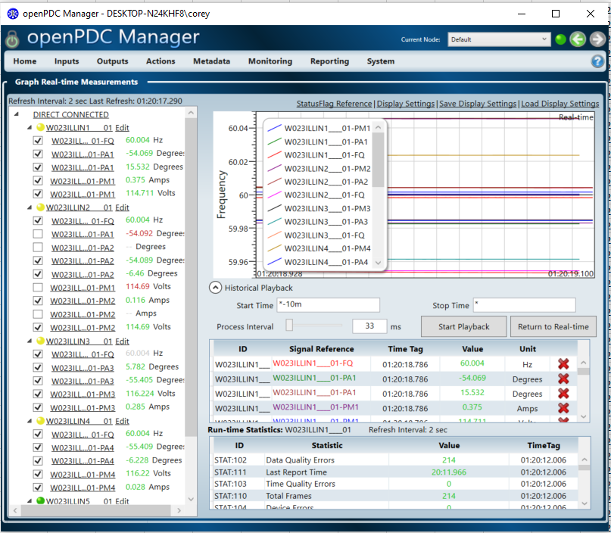
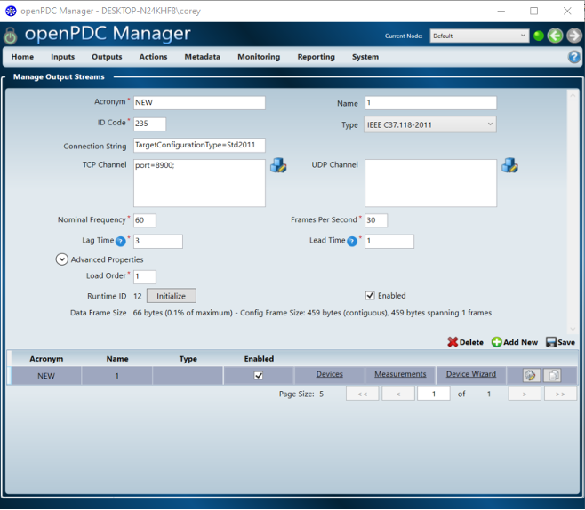

The power system requires new monitoring and controls due to changes both at the generation side as well as the load side. Synchrophasor technology with synchronized and highresolution measurements provided by Phasor Measurement Units (PMUs) has been recognized as a key contributing technology for advanced situational awareness, including event identification, where the application of machine learning techniques is a hot topic recently. Therefore, we design a software for event detection, identification, and localization with and without labelled data. This software is being supported and adopted by Electric Power Research Institute and PMU Data from Idaho Power.
The software is developed in Python®. Windows 8® or Windows10® 64-bit operating system is required. To run the executable file, the Python 3.5+ environment is necessary. The Windows 64-bit version of the Python 3.5 can be downloaded from the Python Web site by navigating to https://www.python.org/downloads/
To start the software, the user can directly run the executable file. The main interfaces are shown below. On the left side, the user needs to set all parameters well so that the training/testing/estimation data for Machine Learning methods are prepared. On the right side, SBML provides multiple result presentations based on which method the user chooses. To illustrate the functionalities of SBML, we go through all modules of SBML and explain technical details for users to understand this software.
Description: We first setup OpenPDC
 
Before starting to train the model, the user first needs to select the machine learning methods in Fig. 1-3. The methods include K-Nearest Neighboring, Decision Tree, Support Vector Machine, Naïve Bayes, Logistic Regression, and Hybrid Method [1]. Specifically, we have the following descriptions:
K-Nearest Neighboring: K-Nearest Neighboring tries to calculate the distance between every testing sample and every training sample. Then, the K nearest neighbors are counted and they together vote for the label of the testing data.
Decision Tree: Decision Tree is a tree structure whose nodes represent features. When we input testing data, we compare the criteria of branching for each node (feature) and finally obtain a leaf node which is the label for the testing event.
Support Vector Machine: Support Vector Machine tries to find the decision boundary with a maximum margin that is the distance between the decision boundary and the closest points (i.e., the so-called support vectors).
Naïve Bayes: Naive Bayes tries to maximize the posterior of the data by assuming each two of the features are conditionally independent given the label. After we obtain all the probabilities for the features given a label, we can input the new testing data and multiply them together. Finally, we compare each label’s probability given the data and choose the largest one as the correct label.
Logistic Regression: Logistic Regression tries to maximize the conditional likelihood of the label given the appearance of the data. Then, the data is fit into a logistic function to obtain the probability for a given label.
Hybrid Machine Learning Method: Hybrid Supervised Learning utilizes different classifiers to classify the event with a label output. Then, these classifiers vote for the event and the label with the most votes is attached to the event.
Unsupervised Learning: Clustering methods are utilized in Unsupervised Learning. These methods employ distance measures (e.g., Euclidean distance) to evaluate the distance between different points in high dimensional spaces. Then, their relationship and belonging are categorized by grouping them by distance.
With the selected method, we can load the event files via the “Load” button. Further, we prepare the loaded data for the following training/testing process by normalization and alignment of multiple event files. We click the “Preprocess” button to achieve this function.
The input data format is described in the appendix. We have the following columns:
Nodal voltage magnitude, angle, and frequency.
Branch current magnitude and angle.
Event type, location, and label.
It's especially noted that the event label is determined by both the event type and location. Namely, each unique combination of event type and location will give a unique event label. In our 100 sample event files, we have the following event type, location, and label information. The rest 80 event files keep repeating the first 20 files with the ordered event type and location under different loading conditions.